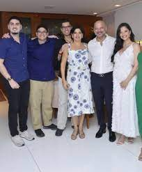

Curriculo de Daniel Murad de Alcantara

Daniel sempre foi um cara muto sóciavel com muitos amigos desde sempre.
Faz academia com uma boa frequência e
acabou de começar no curso de
ciencia da computação na Universidade de Vila velha (UVV).
Estou procurando estagio ou ser aprendiz
pela minha falta de conhecimento na area.
Sociavel, facíl de conversar e de se dar bem.
Dedicado, ele é alguém que sempre tenta atingir seu melhor
Esforçado, sempre da o seu melhor para atingir oque almeja.
Aprendendo cores